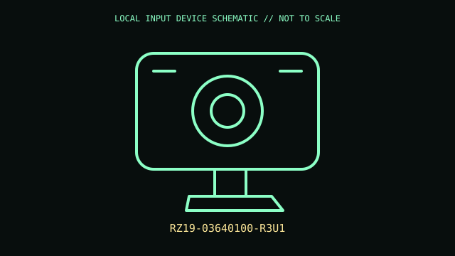

[ IMAGING AND AUDIO-CAPTURE PERIPHERALS // IDENTIFIED COMPONENT ]
Razer Kiyo Pro
USB webcam with adaptive light sensor and selectable field of view for streaming/video calls.

MODEL IDENTIFICATION: RZ19-03640100-R3U1. Confirm the printed SKU, revision, bundle, region, and included accessories before repair or compatibility claims.
Model specifications
| Catalog leaf | Imaging and audio-capture peripherals |
|---|---|
| Exact model / identifier | RZ19-03640100-R3U1 |
| Mechanism and primary specifications | USB 3.0 webcam; adaptive-light sensor with HDR capture; full HD capture modes up to 1080p/60 fps under supported settings; built-in privacy cover; adjustable FOV options in Synapse. |
| Compatibility and interface caveats | Video format, HDR and FOV depend on USB bandwidth, host software, lighting, and Synapse/OS support. Verify suffix and bundled cable. |
| Revision identification | Record the full label and software/firmware revision. Similar product-family names may use different protocols, components, connectors, or bundled accessories. |
Preservation and service
Protect lens and privacy cover; clean optical surfaces with microfiber and prevent cable torque at USB port.
Separate observed condition and test setup from vendor-published specifications; record host OS, driver/app version, cables, adapters, and accessories.
Primary manufacturer sources
- Razer Kiyo Pro productManufacturer documentation; verify the exact SKU, revision, region, and accessories against the unit label.
- Razer streaming camera catalogManufacturer documentation; verify the exact SKU, revision, region, and accessories against the unit label.
Manufacturer support pages can change; retain the applicable manual and its revision in the physical equipment record.